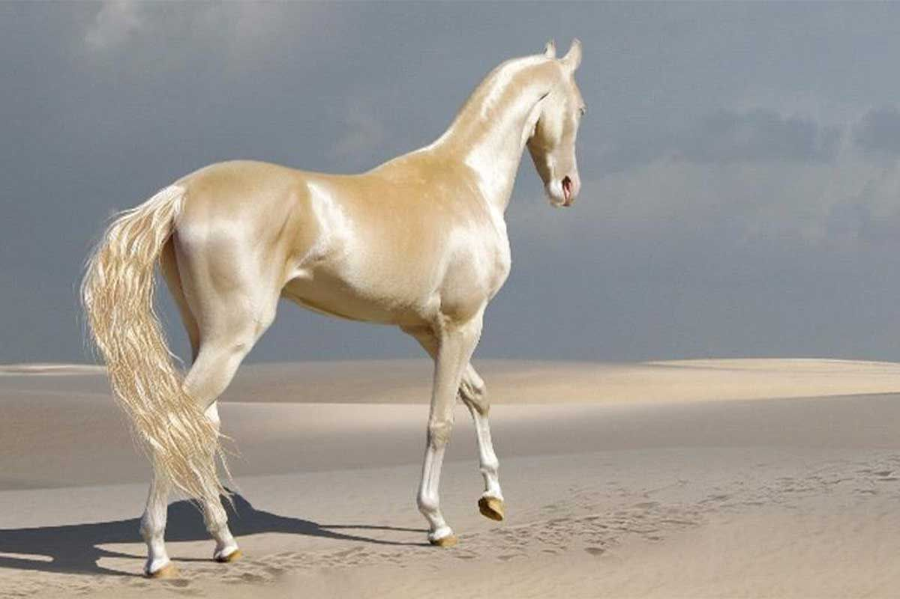
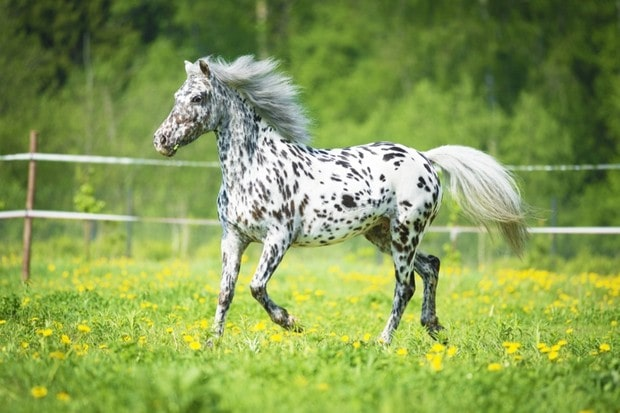
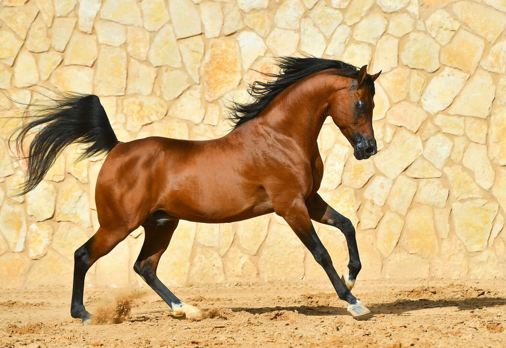
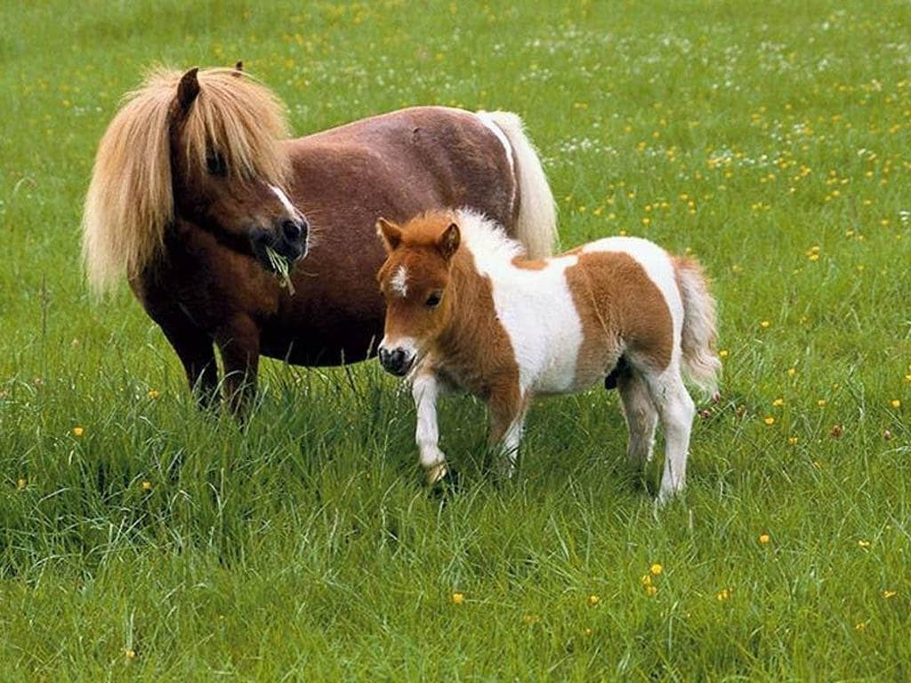
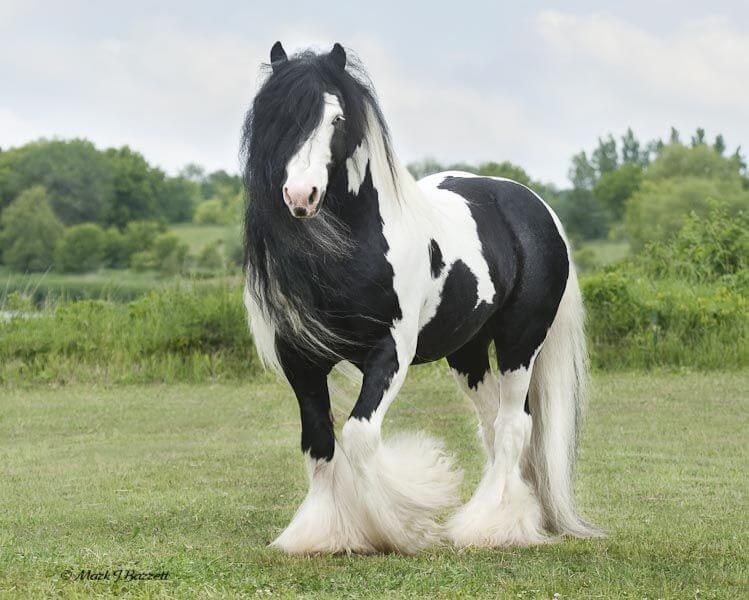
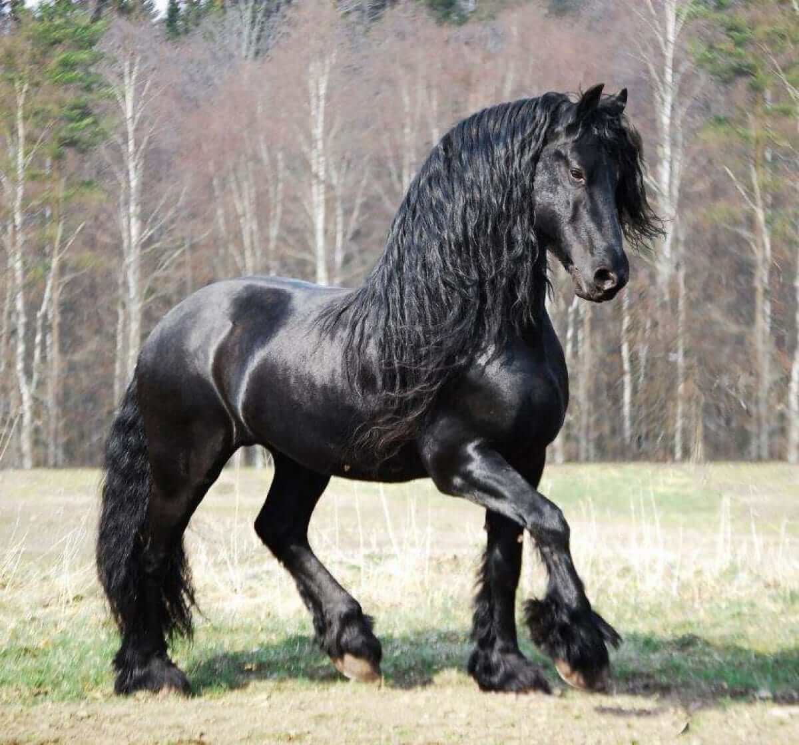
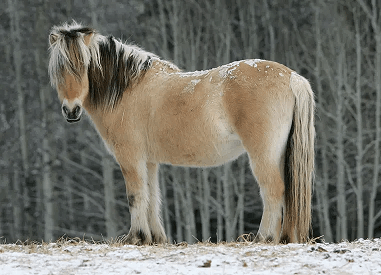
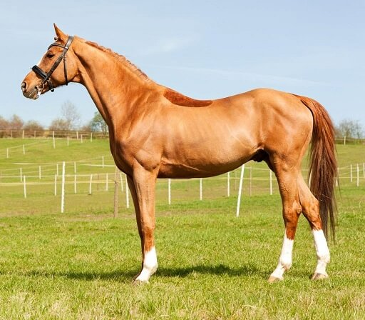

Akhal-Teke breed bred in the territory of modern Turkmenistan (Akhal-Teke), presumably about 5000 years ago.
This is the oldest of the cultured breeds, which has influenced many others.

Appaloosa is bred and popular in the USA, best known for its colorful spotted coat pattern. The color can vary from dark with white spots to almost white with small dark spots.

Arabian horse is an ancient breed

Falabella is a miniature horse rather than a pony and one of the smallest breeds of the present generation of horses. The Falabellas, with generations of selective breeding, can survive in severe weather conditions, and sometimes even better than their taller counterparts. They are characterized by extremely long life.

Known for their excellent temperaments and recognized for their beautiful feathering and eye-catching coats, Gypsy Vanner horses are quickly growing in popularity today. These horses may have been raised to pull caravans. Gypsy Vanners can be well-paired with children, as well as with beginner and advanced adult riders.

Friesian horses are a tall, big-boned equine breed that typically has a black coat with thick manes and tails. These animals have the desired temperament and athletic ability to perform well in dressage. They are also suitable horses for beginners or advanced riders.

The Norwegian Fjord Horse is one of the world's oldest and purest breeds. It is believed that the original Fjord Horse migrated to Norway and was domesticated over 4,000 years ago. Herds of wild Fjord Horses existed in Norway after the last ice age.

Thoroughbreds are the most popular racing horse in North America. This breed is considered a "hot-blooded" horse, which means it's known for its agility, speed, and spirit.